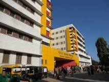
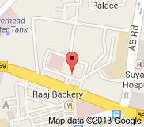
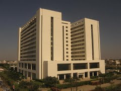
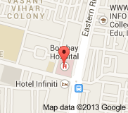
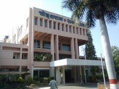
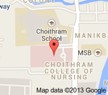
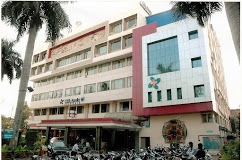
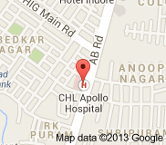
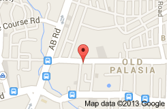

Maharaja Yashwantrao Hospital
 M. Y. Hospital has 1200 beds with all the major medical departments: surgery, medicine, obstetrics & gynaecology, dermatology,chest&tb, orthopaedics, E.N.T., ophthalmology, radiology, anaesthesiology, paediatrics, forensic medicine, and casualty,cardiology,neurology,gastroenterology,nephrology,endocrinology divisions are under parent medicine department .Medicine dept. has 18 bedded MICU,8 bedded ICCU, 5 hemodialysis machine,endoscopy unit,ventilators etc.

Bombay Hospital
Bombay Hospital is a private hospital in Indore, India. It was founded in 1950s by R. D. Birla.[1] It has 600 beds, 36 of which are in the critical care and recovery area. It offers tertiary healthcare facilities, has 10 Operation Theatres offering services for all super specialty to the Neuro surgery, urology, neurology, cardio thoracic surgery, cardiology, Gastroenterology, nephrology, endocrinology and oncosurgery, specialty like General Medicine, pediatrics, general and leproscopic surgery, orthopedic and joint replacement, physiotherapy, etc., and 36 Intensive care beds (Medical, Surgical, Cardiac, Neuroscience, Pediatric, Neonatal and High dependency units). Besides these, Dialysis unit having 10 dialysis stations.

Choithram Hospital
Choithram Hospital & Research Centre is not only a hospital to treat disease but a complete institution for care of whole Society. This hospital was established in the year 1979 by Late Shri Thakurdasji in the fond memory of his father Shri Choithramji Pagarani. Since its inception the founder of this hospital knew the problems of large section of our society, especially the rural masses who couldn’t afford treatment. He laid the
principle of free OPD, where any patient can consult any specialist doctor, and made available all specialities of medical sciences with finest investigation facilities under one roof.

C.H.L Apollo Hospital
CHL-Hospitals, Indore is managed and owned by the Convenient Hospitals Ltd, Indore. CHL Hospitals is a 225-bedded Multi Specialty Critical Care Hospital located on A.B Road, Indore, Madhya Pradesh, (India) and has premium connectivity with the entire India. The hospital has gained widespread recognition being the first fully equipped center of international standard for Cardiac Interventions and Surgeries in the state. The hospital also enjoys the reputation of being the first to perform Coronary Bypass Surgeries, Coronary Angioplasty and other Catheter based interventions in Indore with a record of highest numbers in central India.

Greater Kailash Hospital
Address:11/2, Old Palasia.
Indore, Madhya Pradesh
IndiaPhone:0731-2494175/5051160-65 Fax:(0731)4043929
E-mail:greaterkailash@aim.com
